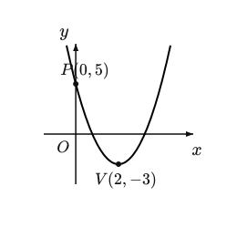
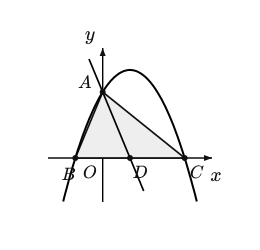
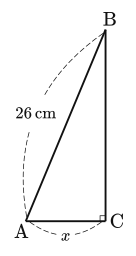
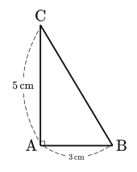
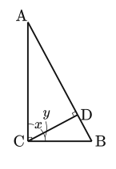

10.5점그림의 포물선은 y=ax2+bx+c\displaystyle y=ax^2+bx+cy=ax2+bx+c의 그래프이다. 꼭짓점은 V(2,−3)\displaystyle V(2,-3)V(2,−3)이고 점 P(0,5)\displaystyle P(0,5)P(0,5)를 지난다. 계수와 함숫값을 복구한 기록 (a,b,c,a+b+c)\displaystyle (a,b,c,a+b+c)(a,b,c,a+b+c)로 옳은 것은?①(2,8,5,15)\displaystyle (2,8,5,15)(2,8,5,15)②(2,−8,5,−1)\displaystyle (2,-8,5,-1)(2,−8,5,−1)③(−2,8,5,11)\displaystyle (-2,8,5,11)(−2,8,5,11)④(2,−8,−5,−11)\displaystyle (2,-8,-5,-11)(2,−8,−5,−11)⑤(2,−4,5,3)\displaystyle (2,-4,5,3)(2,−4,5,3)②꼭짓점이 (2,−3)\displaystyle (2,-3)(2,−3)이므로 식은 y=a(x−2)2−3\displaystyle y=a(x-2)^2-3y=a(x−2)2−3이다. 점 (0,5)\displaystyle (0,5)(0,5)를 대입하면 5=4a−3\displaystyle 5=4a-35=4a−3에서 a=2\displaystyle a=2a=2이다.이를 전개하면 y=2x2−8x+5\displaystyle y=2x^2-8x+5y=2x2−8x+5이므로 b=−8\displaystyle b=-8b=−8, c=5\displaystyle c=5c=5이다. 또 a+b+c\displaystyle a+b+ca+b+c는 x=1\displaystyle x=1x=1일 때의 함숫값으로 2−8+5=−1\displaystyle 2-8+5=-12−8+5=−1이다. 따라서 기록은 (2,−8,5,−1)\displaystyle (2,-8,5,-1)(2,−8,5,−1)이며 정답은 ②이다.
11.5점이차함수 y=kx2+4kx+4k−9\displaystyle y=kx^2+4kx+4k-9y=kx2+4kx+4k−9의 그래프를 조사해 다음 표를 얻었다.사분면그래프가 지나는가제1\displaystyle 11사분면예제2\displaystyle 22사분면예제3\displaystyle 33사분면예제4\displaystyle 44사분면아니오이 기록이 성립하는 k\displaystyle kk의 범위를 빠짐없이 정확하게 나타낸 것은? (단, k≠0\displaystyle k\ne0k=0이다.)①k<0\displaystyle k<0k<0②0<k<94\displaystyle 0<k<\dfrac940<k<49③0<k≤94\displaystyle 0<k\leq\dfrac940<k≤49④k>94\displaystyle k>\dfrac94k>49⑤k≥94\displaystyle k\geq\dfrac94k≥49⑤식을 고치면 y=k(x+2)2−9\displaystyle y=k(x+2)^2-9y=k(x+2)2−9이므로 꼭짓점은 (−2,−9)\displaystyle (-2,-9)(−2,−9)이다. k<0\displaystyle k<0k<0이면 그래프 전체가 x\displaystyle xx축 아래에 있어 제1\displaystyle 11, 제2\displaystyle 22사분면을 지날 수 없으므로 k>0\displaystyle k>0k>0이어야 한다.k>0\displaystyle k>0k>0일 때 축은 x=−2\displaystyle x=-2x=−2이고, 그 오른쪽에서는 x\displaystyle xx가 증가하면 y\displaystyle yy도 증가한다. 따라서 x>0\displaystyle x>0x>0에서 음의 y\displaystyle yy값이 생기지 않으려면 x=0\displaystyle x=0x=0에서의 값 4k−9\displaystyle 4k-94k−9가 0\displaystyle 00 이상이어야 한다. 즉 4k−9≥0\displaystyle 4k-9\geq04k−9≥0에서 k≥94\displaystyle k\geq\dfrac94k≥49이다. 등호일 때도 양의 x\displaystyle xx에서는 y>0\displaystyle y>0y>0이고 제4\displaystyle 44사분면을 지나지 않는다.이 범위에서 꼭짓점은 제3\displaystyle 33사분면에 있고, 축의 왼쪽으로 충분히 가면 제2\displaystyle 22사분면을, 오른쪽 양의 x\displaystyle xx에서는 제1\displaystyle 11사분면을 지난다. 따라서 세 ‘예’ 기록도 성립한다. 정답은 ⑤이다.
12.5점그림은 y=−x2+2x+3\displaystyle y=-x^2+2x+3y=−x2+2x+3의 그래프이다. A\displaystyle \mathrm{A}A는 y\displaystyle yy축과 만나는 점이고, B,C\displaystyle B,CB,C는 왼쪽부터 차례로 x\displaystyle xx축과 만나는 점이다. A\displaystyle \mathrm{A}A를 지나는 직선 ℓ:y=mx+n\displaystyle \ell:y=mx+nℓ:y=mx+n이 삼각형 ABC\displaystyle \mathrm{ABC}ABC의 넓이를 이등분한다. D\displaystyle \mathrm{D}D를 직선 ℓ\displaystyle \ellℓ과 선분 BC\displaystyle \mathrm{BC}BC의 교점이라 할 때, 검산 기록 **(D\displaystyle \mathrm{D}D의 x\displaystyle xx좌표, m\displaystyle mm, n\displaystyle nn)**으로 옳은 것은?①(1,3,3)\displaystyle (1,3,3)(1,3,3)②(1,−3,3)\displaystyle (1,-3,3)(1,−3,3)③(2,−3,3)\displaystyle (2,-3,3)(2,−3,3)④(1,−3,−3)\displaystyle (1,-3,-3)(1,−3,−3)⑤(0,−3,3)\displaystyle (0,-3,3)(0,−3,3)②−x2+2x+3=−(x−3)(x+1)\displaystyle -x^2+2x+3=-(x-3)(x+1)−x2+2x+3=−(x−3)(x+1)이므로 B=(−1,0)\displaystyle B=(-1,0)B=(−1,0), C=(3,0)\displaystyle C=(3,0)C=(3,0)이다. x=0\displaystyle x=0x=0을 대입하면 A=(0,3)\displaystyle A=(0,3)A=(0,3)이다.삼각형 ABD\displaystyle \mathrm{ABD}ABD와 ADC\displaystyle \mathrm{ADC}ADC는 밑변이 같은 직선 BC\displaystyle \mathrm{BC}BC 위에 있고 높이가 같으므로 넓이가 같으려면 BD‾=DC‾\displaystyle \overline{\mathrm{BD}}=\overline{\mathrm{DC}}BD=DC여야 한다. 따라서 D\displaystyle \mathrm{D}D는 BC\displaystyle \mathrm{BC}BC의 중점이고 D=(1,0)\displaystyle D=(1,0)D=(1,0)이다.직선은 A=(0,3)\displaystyle A=(0,3)A=(0,3)을 지나므로 n=3\displaystyle n=3n=3이다. D=(1,0)\displaystyle D=(1,0)D=(1,0)도 지나므로 0=m+3\displaystyle 0=m+30=m+3에서 m=−3\displaystyle m=-3m=−3이다. 기록은 (1,−3,3)\displaystyle (1,-3,3)(1,−3,3)이며 정답은 ②이다.
13.3점직각삼각형 ABC\displaystyle \mathrm{ABC}ABC의 측정 기록에서 한 변이 지워졌다.항목기록직각인 꼭짓점C\displaystyle \mathrm{C}C빗변 AB‾\displaystyle \overline{\mathrm{AB}}AB26 cm\displaystyle 26\,\mathrm{cm}26cmcosA\displaystyle \cos AcosA513\displaystyle \dfrac{5}{13}135그림의 x=AC‾\displaystyle x=\overline{\mathrm{AC}}x=AC는?①5 cm\displaystyle 5\,\mathrm{cm}5cm②10 cm\displaystyle 10\,\mathrm{cm}10cm③12 cm\displaystyle 12\,\mathrm{cm}12cm④13 cm\displaystyle 13\,\mathrm{cm}13cm⑤24 cm\displaystyle 24\,\mathrm{cm}24cm②직각은 C\displaystyle \mathrm{C}C에 있으므로 빗변은 AB\displaystyle \mathrm{AB}AB이다. A\displaystyle \mathrm{A}A에 이웃한 직각변은 AC\displaystyle \mathrm{AC}AC이므로 cosA=AC‾AB‾=x26\displaystyle \cos A=\dfrac{\overline{\mathrm{AC}}}{\overline{\mathrm{AB}}}=\dfrac{x}{26}cosA=ABAC=26x이다.x26=513\displaystyle \dfrac{x}{26}=\dfrac{5}{13}26x=135에서 x=26×513=10\displaystyle x=26\times\dfrac{5}{13}=10x=26×135=10이다. 따라서 AC‾=10 cm\displaystyle \overline{\mathrm{AC}}=10\,\mathrm{cm}AC=10cm이며 정답은 ②이다.
14.4점직각삼각형 ABC\displaystyle \mathrm{ABC}ABC에서 ∠A=90∘\displaystyle \angle \mathrm{A}=90^\circ∠A=90∘, AB‾=3 cm\displaystyle \overline{\mathrm{AB}}=3\,\mathrm{cm}AB=3cm, AC‾=5 cm\displaystyle \overline{\mathrm{AC}}=5\,\mathrm{cm}AC=5cm이다. 두 각에 대한 계산 기록 (cosB,tanC)\displaystyle (\cos B,\tan C)(cosB,tanC)를 바르게 작성한 것은?①(53434,35)\displaystyle \left(\dfrac{5\sqrt{34}}{34},\dfrac35\right)(34534,53)②(33434,35)\displaystyle \left(\dfrac{3\sqrt{34}}{34},\dfrac35\right)(34334,53)③(33434,53)\displaystyle \left(\dfrac{3\sqrt{34}}{34},\dfrac53\right)(34334,35)④(35,33434)\displaystyle \left(\dfrac35,\dfrac{3\sqrt{34}}{34}\right)(53,34334)⑤(343,35)\displaystyle \left(\dfrac{\sqrt{34}}3,\dfrac35\right)(334,53)②피타고라스 정리에 의해 빗변의 길이는 BC‾=32+52=34 cm\displaystyle \overline{\mathrm{BC}}=\sqrt{3^2+5^2}=\sqrt{34}\,\mathrm{cm}BC=32+52=34cm이다. 각 B\displaystyle \mathrm{B}B에 이웃한 직각변은 AB\displaystyle \mathrm{AB}AB이므로 cosB=334=33434\displaystyle \cos B=\dfrac{3}{\sqrt{34}}=\dfrac{3\sqrt{34}}{34}cosB=343=34334이다.각 C\displaystyle \mathrm{C}C의 맞은편 직각변은 AB\displaystyle \mathrm{AB}AB, 이웃한 직각변은 AC\displaystyle \mathrm{AC}AC이므로 tanC=35\displaystyle \tan C=\dfrac{3}{5}tanC=53이다. 따라서 두 기록은 (33434,35)\displaystyle \left(\dfrac{3\sqrt{34}}{34},\dfrac35\right)(34334,53)로 정답은 ②이다.
16.3점특수각 계산 기록의 계수 한 칸이 지워졌다.계산식결과asin60∘×tan45∘÷cos30∘−sin90∘\displaystyle a\sin60^\circ\times\tan45^\circ\div\cos30^\circ-\sin90^\circasin60∘×tan45∘÷cos30∘−sin90∘4\displaystyle 44기록이 맞도록 하는 상수 a\displaystyle aa의 값은?①2\displaystyle 22②3\displaystyle 33③4\displaystyle 44④5\displaystyle 55⑤6\displaystyle 66④sin60∘=32\displaystyle \sin60^\circ=\dfrac{\sqrt3}{2}sin60∘=23, tan45∘=1\displaystyle \tan45^\circ=1tan45∘=1, cos30∘=32\displaystyle \cos30^\circ=\dfrac{\sqrt3}{2}cos30∘=23, sin90∘=1\displaystyle \sin90^\circ=1sin90∘=1이다. 각각의 값을 계산식에 대입하면 a×32×1÷32−1=a−1\displaystyle a\times\dfrac{\sqrt3}{2}\times1\div\dfrac{\sqrt3}{2}-1=a-1a×23×1÷23−1=a−1이다.결과가 4\displaystyle 44이므로 a−1=4\displaystyle a-1=4a−1=4에서 a=5\displaystyle a=5a=5이다. 직접 대입해도 5−1=4\displaystyle 5-1=45−1=4로 기록과 맞으므로 정답은 ④이다.
17.4점직각삼각형 ABC\displaystyle \mathrm{ABC}ABC에서 ∠C=90∘\displaystyle \angle \mathrm{C}=90^\circ∠C=90∘, AC‾=15 cm\displaystyle \overline{\mathrm{AC}}=15\,\mathrm{cm}AC=15cm, BC‾=8 cm\displaystyle \overline{\mathrm{BC}}=8\,\mathrm{cm}BC=8cm이다. D\displaystyle \mathrm{D}D는 C\displaystyle \mathrm{C}C에서 빗변 AB\displaystyle \mathrm{AB}AB에 내린 수선의 발이다. x=∠ACD\displaystyle x=\angle \mathrm{ACD}x=∠ACD, y=∠DCB\displaystyle y=\angle \mathrm{DCB}y=∠DCB라 할 때, 두 계산 기록 (cosx,siny)\displaystyle (\cos x,\sin y)(cosx,siny)로 옳은 것은?①(1517,817)\displaystyle \left(\dfrac{15}{17},\dfrac8{17}\right)(1715,178)②(817,1517)\displaystyle \left(\dfrac8{17},\dfrac{15}{17}\right)(178,1715)③(817,817)\displaystyle \left(\dfrac8{17},\dfrac8{17}\right)(178,178)④(158,817)\displaystyle \left(\dfrac{15}{8},\dfrac8{17}\right)(815,178)⑤(815,815)\displaystyle \left(\dfrac8{15},\dfrac8{15}\right)(158,158)③피타고라스 정리로 AB‾=152+82=17 cm\displaystyle \overline{\mathrm{AB}}=\sqrt{15^2+8^2}=17\,\mathrm{cm}AB=152+82=17cm이다. ∠A=α\displaystyle \angle \mathrm{A}=\alpha∠A=α, ∠B=β\displaystyle \angle \mathrm{B}=\beta∠B=β라 하면 α+β=90∘\displaystyle \alpha+\beta=90^\circα+β=90∘이다.직각삼각형 ACD\displaystyle \mathrm{ACD}ACD에서 ∠CAD=α\displaystyle \angle \mathrm{CAD}=\alpha∠CAD=α이므로 x=90∘−α=β\displaystyle x=90^\circ-\alpha=\betax=90∘−α=β이다. 직각삼각형 BCD\displaystyle \mathrm{BCD}BCD에서는 y=90∘−β=α\displaystyle y=90^\circ-\beta=\alphay=90∘−β=α이다.이제 원래 삼각형 ABC\displaystyle \mathrm{ABC}ABC에서 각각 정의를 적용하면 cosx=cosβ=BC‾AB‾=817\displaystyle \cos x=\cos\beta=\dfrac{\overline{\mathrm{BC}}}{\overline{\mathrm{AB}}}=\dfrac8{17}cosx=cosβ=ABBC=178이고, siny=sinα=BC‾AB‾=817\displaystyle \sin y=\sin\alpha=\dfrac{\overline{\mathrm{BC}}}{\overline{\mathrm{AB}}}=\dfrac8{17}siny=sinα=ABBC=178이다. 따라서 두 기록은 (817,817)\displaystyle \left(\dfrac8{17},\dfrac8{17}\right)(178,178)이므로 정답은 ③이다.
18.4점삼각형의 세 내각의 크기의 비는 2:3:4\displaystyle 2:3:42:3:4이다. 세 각 중 두 번째로 큰 각을 A\displaystyle \mathrm{A}A라 할 때, 다음 검산 기록이 맞도록 누락된 계수 u\displaystyle uu를 복구하려고 한다.계산식결과cosAsinA+utanA\displaystyle \dfrac{\cos A}{\sin A}+u\tan AsinAcosA+utanA733\displaystyle \dfrac{7\sqrt3}{3}373u\displaystyle uu의 값은?①13\displaystyle \dfrac1331②1\displaystyle 11③2\displaystyle 22④3\displaystyle 33⑤73\displaystyle \dfrac7337③세 내각의 합이 180∘\displaystyle 180^\circ180∘이므로 각의 크기는 40∘\displaystyle 40^\circ40∘, 60∘\displaystyle 60^\circ60∘, 80∘\displaystyle 80^\circ80∘이다. 따라서 두 번째로 큰 각은 A=60∘\displaystyle A=60^\circA=60∘이다.각 값을 따로 대입하면 cos60∘sin60∘=1/23/2=33\displaystyle \dfrac{\cos60^\circ}{\sin60^\circ}=\dfrac{1/2}{\sqrt3/2}=\dfrac{\sqrt3}{3}sin60∘cos60∘=3/21/2=33이고 tan60∘=3\displaystyle \tan60^\circ=\sqrt3tan60∘=3이다. 기록에 따라 33+u3=733\displaystyle \dfrac{\sqrt3}{3}+u\sqrt3=\dfrac{7\sqrt3}{3}33+u3=373이다.양변을 양수 3\displaystyle \sqrt33으로 나누면 13+u=73\displaystyle \dfrac13+u=\dfrac7331+u=37이므로 u=2\displaystyle u=2u=2이다. 정답은 ③이다.